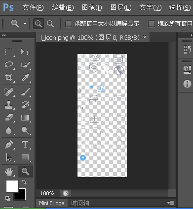
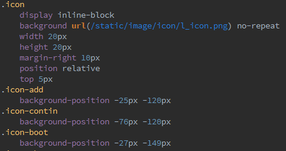
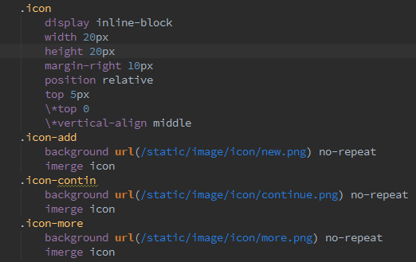
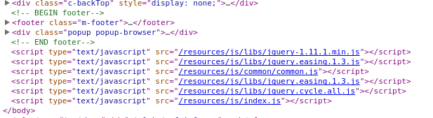
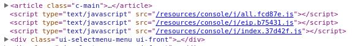
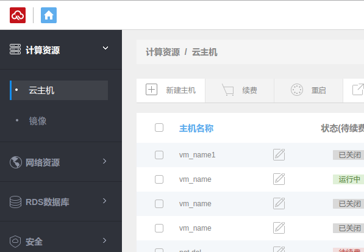
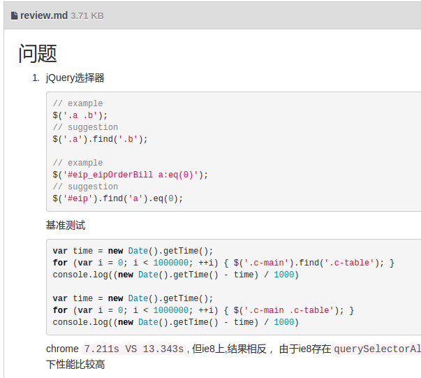

React技术分享
内容
- 前端框架简介
- 前端模板技术
- 组件设计
前端框架
-
MVC/MVP
- Backbone
-
MVVM
- Angular/Ember
MV*
- View: 视图层，一般为前端模板
- Model: 数据层，提供数据及数据的操作方法
- *: 完成数据到视图，视图到数据的更新
React.js只是一个提供了状态的View层


text/template
辅助工具
一个可靠的本地开发环境
Amazing拆分
引入Nobone
三条命令搞定整个“开发”->“提测”流程
gulp servergulp buildgulp testgulp build做了什么
一切从加载性能出发
代码合并压缩
自动合图
解决浏览器缓存问题
自动合图



解决浏览器缓存
 工作成果
业务产出
技术产出
一套前端开发及部署的解决方案
三个构建工具
- 合图工具Imerge
https://github.com/Javey/imerge - 静态资源md5化工具nocache
https://github.com/Javey/nocache - js合并工具gulp-document-write
https://github.com/Javey/gulp-document-write
还有什么...
组内分享
- 模块化开发
- 资源按需加载
- 函数式编程
- 前端模板
- 服务器推送技术
code review
webapp技术储备，推广使用react.js
取得的收获
成就感
有待改进的方面
执行力不够
项目管理经验不足
下一步工作计划
技术
- 从工具到平台
- 跨产品线通用组件提取
- 技术调研，如采用BigPipe技术，提高pcweb访问速度
- webapp
小组建设
- 更多高质量的技术分享
- 不局限于业务开发